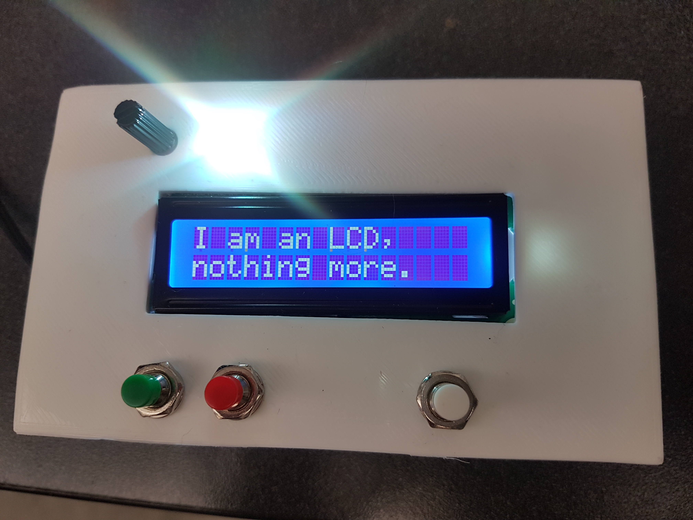
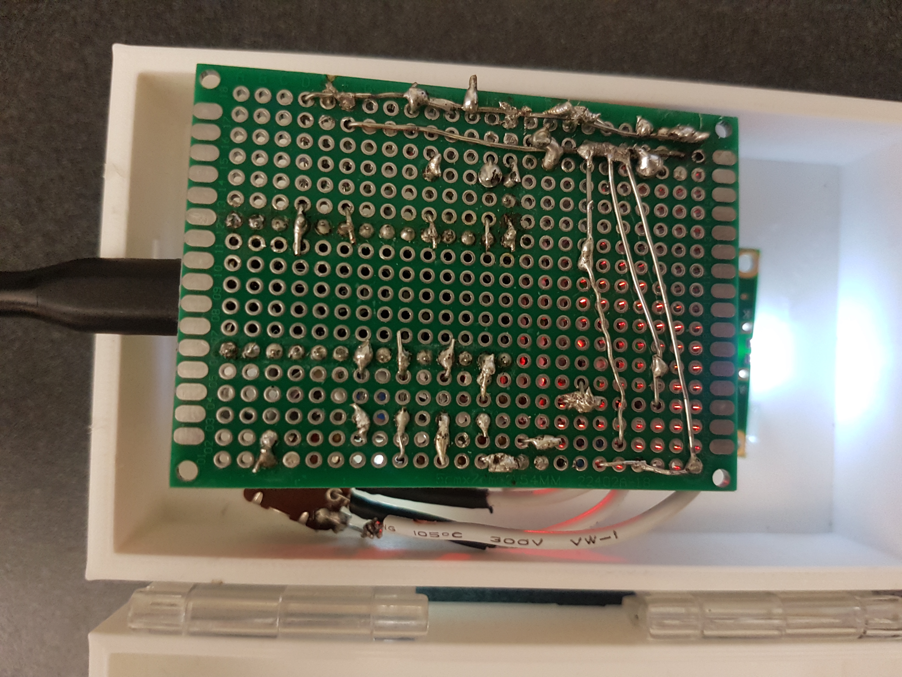

ART 106
[ demo ]
Duties
I modified the sketch that demonstrated Processing to 3 outputs. I also got our LCD (serial output) working.
Demo
[ prototype ]
Duties
I created the model for the box (Nhi printed it for me), the hardware (except for the bone speaker, which we didn't end up including), and the code.
Finished Project
